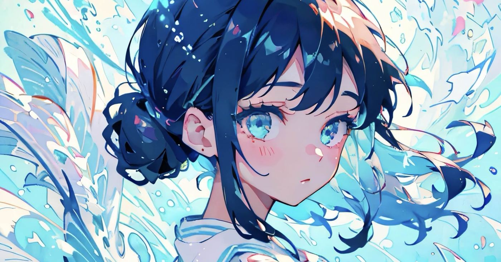
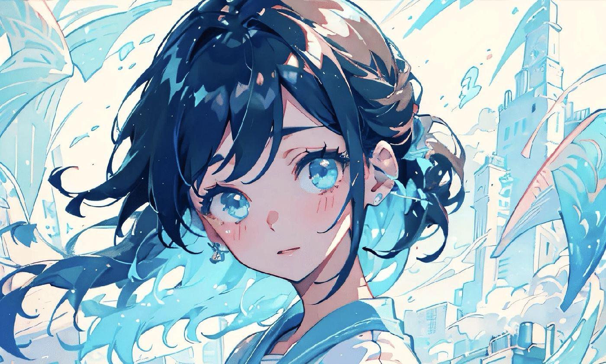
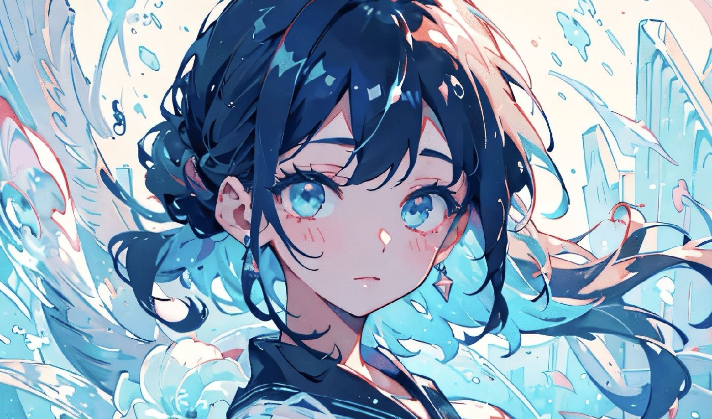
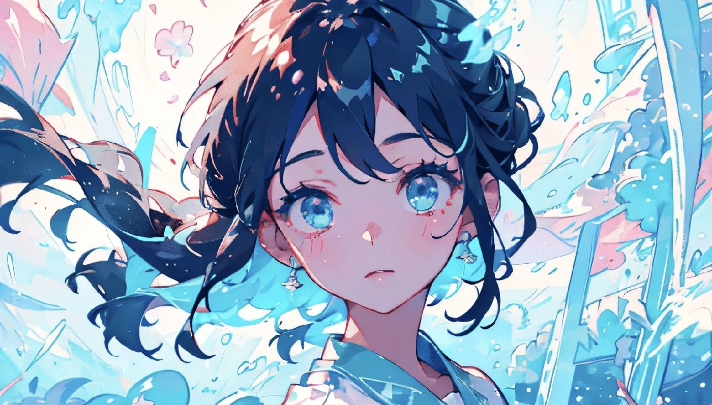
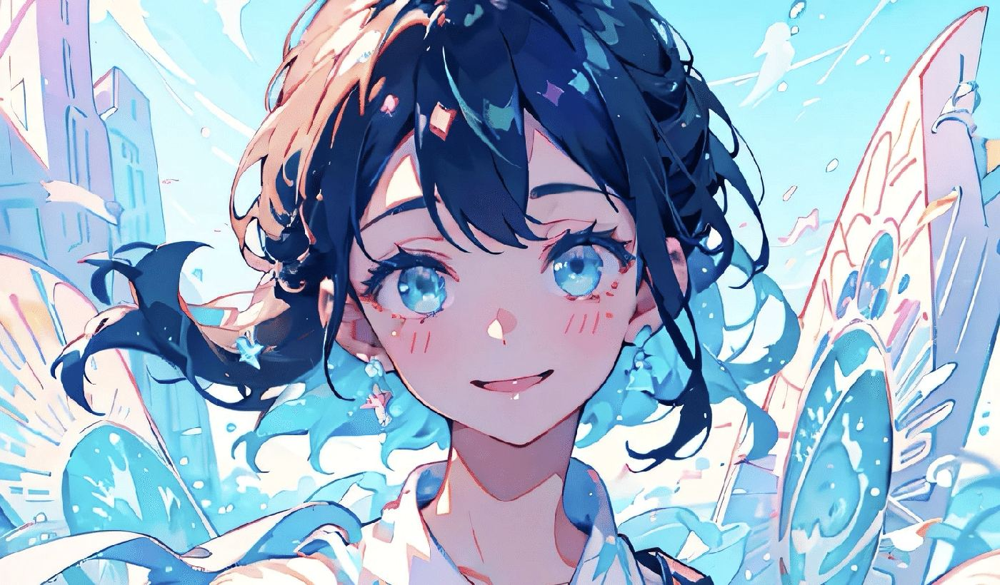
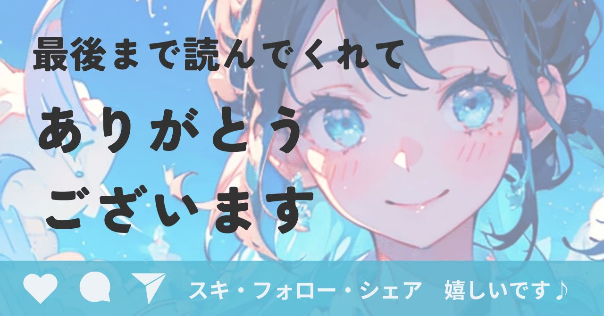

noteが全然書けない。
子どもが寝てから仕事してて寝落ちした日もあるんですけど、「さあどのネタを出そうかな」と机に向かうと。
書こうとしてたのに、なぜか書けない。
似たようなことで悩んだことないでしょうか？
今回は事業評価をたくさんしてきた人間は
こんなところでnoteにつまずいてるよ！
という思考のクセの話です。

Why you?を400社に聞いてきた仕事
私の本業の1つは、ビジネスプランコンテストの事務局です。審査の現場を一番近くで見続けてきた立場。
審査員が応募者に必ず聞く質問があります。
Why you?
なぜ、あなたがその事業をやるのか。
これって厳しく問い詰めてるように見えて、実は応募者の魅力を引き出すための質問なんですよね。
以前、あるSaaSプラットフォームの応募者がいました。実績もキャリアも申し分ない。
でもこのままだとよくあるSaaSサービスで終わっちゃうんで、もう少しストーリー性が欲しいなと、審査員がWhy you?を尋ねたんです。
そしたら、すごく印象的な原体験が出てきた。
その原体験を重ねながら聞くと、事業の魅力が急にぐんと高まった。

この人がこの事業をやるからこそ、
資金調達だろうが
販路開拓だろうが
多くの人が手間暇かけて社会実装させる価値があると感じられるんです。
もうすぐ500社見てきて気づく。審査を通過する人の共通点
今まで見てきて分かったことがあります。
審査を通過する人は、プロダクトそのものが洗練されてる。
そして、Why you?を聞かれた時、
誰よりも自分がふさわしいと思わせる答えが返ってくる。
原体験から生まれた課題を、新しい発想で解決しようとしてるからこその魅力というんでしょうか。
原体験がないと絶対ダメ！というわけではないです。ただ、
誰が何をなぜやるかって、
めちゃくちゃ重いな
この基準を、ずっと事務局として審査の現場で見てきました。
自分のnote記事にも同じ基準を当てはめてた
で、今回。Claudeに課金した話をnoteに書こうとしてたんです。
下書きをClaudeに見せながら
なぜ私がこの記事を出すのか、
理由づけが弱い気がする
と相談している自分がいる。

画面の向こうに、無意識に審査員を座らせている自分がいる。
AI活用を語るクリエイターなんて
山ほどいる中で、
私が書く独自性はどこにある？
脳内の自分が、冷ややかに問いかけてくる。
以前マーケティング目線が付きまとう話を少し書いたんですけど、Why you?もまた同様なのでした。
マーケ目線が消えなくて悩んでる話▼
https://note.com/alive_sheep6563/n/nafecb2740868
エッセイとビジネスプランは違うのに割り切れない人
ウジウジずーっと悩んでたんですが、
ビジネスプランのWhy you?と、
noteのエッセイのWhy you?は、
求められる強度が違いますよ
Claudeにそう言われて納得しました。

ビジネスプランのWhy you?は、
あなたじゃなきゃ事業が成立しないという強い排他的な独自性。
でもnoteのエッセイに必要なのは、
あなたの視点を読みたいという親近感ベースの独自性。
全然レベルが違うのに、同じ基準を持ち込んでいたわけです。
個人の発信に、そこまで求められてない
冷静に考えたら、自意識過剰もいいところですよね。別に私のnoteは資金調達を募ってるわけじゃない。
ただの個人の発信に、Why you?なんてそんな高いハードル、誰も求めてないんですよね。
ちなみに
・noteだけで生きていくトップクリエイター
・メンシプで数百人以上を安定して集めたい
というような収益性を一定レベルに高めたい場合は、Why you?を極める価値は高いです。
というわけで、次回。
審査員目線をひとまず無理やり置いて、
次回読むならどれがいい？
あなたの独断と偏見で選んでほしいです😊
①ワーママがClaude課金して時短できるのか
②最近のスタートアップ界隈のお金事情
③とりあえずAIイラスト
④その他リクエスト
ここまで読んでいただき感謝します。
さてさて、敬愛する心野けいかさんが
note1周年を迎えましたよー！！
https://note.com/koko_kei/n/n3ed6aeff9483?sub_rt=share_b
一周年おめでとうございます！
これからも三人衆のわちゃわちゃを楽しみにしてます😊
梅雨本番、元気に過ごしましょうね♪
